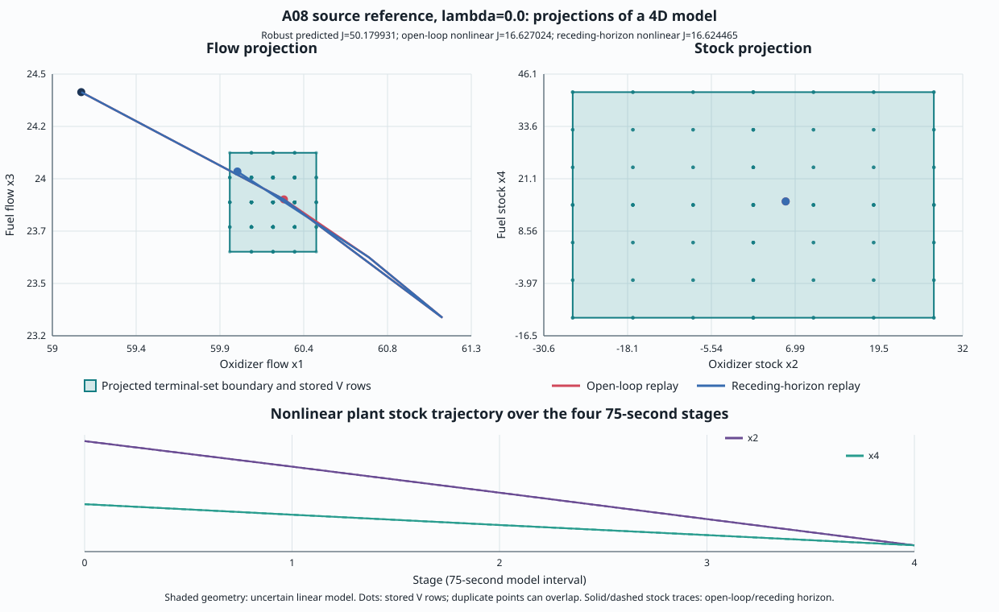
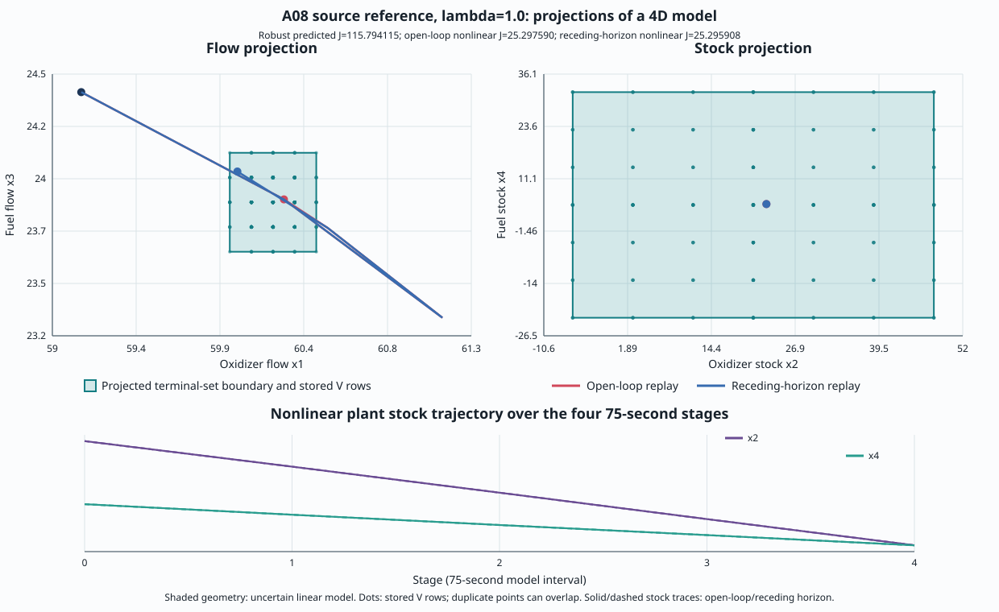

B09 A08 fuel source-reference
Reference case, not a historical reproduction. Source hashes identify local MATLAB files; publication row mapping remains unresolved. The four-state model uses finite-action minimax. Historical outputs are not targets.
The figures project the terminal reachable set from four dimensions to flows (x1,x3) and stocks (x2,x4). Open-loop and receding-horizon nonlinear replays are shown as trajectories in red and blue. The shaded boundary comes from the uncertain linear model; trajectories are separate evidence. Replanning does not establish globally optimal causal synthesis.
| lambda | Feasible plans | Open-loop minimizers | Robust predicted J | Open-loop replay J | Receding-horizon replay J | Terminal V rows | Distinct stored points | Median (ms) | Range (ms) |
|---|---|---|---|---|---|---|---|---|---|
| 0.0 | 76 / 6,561 | 4 | 50.179930945 | 16.627024 | 16.624465 | 256 | 256 | 242.333 | 234.719–251.626 |
| 1.0 | 76 / 6,561 | 6 | 115.794115476 | 25.297590 | 25.295908 | 256 | 240 | 240.476 | 234.693–242.919 |


Seven alternating Release measurement rounds per objective; each separately launched process has one excluded warmup. Each public interval includes request construction and solution. Independent direct enumeration agrees on the value and every open-loop minimizing action sequence. Linux process peak RSS reached 16340 KiB across measured calls; geometry rows include replay calculations. Linux process peak RSS was 16428 KiB across measured calls; geometry calls include replay calculations. These timings describe one adapter and host, with no speedup claim.
Assumptions and reproduction · Geometry and terminal results · Raw timing rows · Independent oracle · Provenance · Checksums